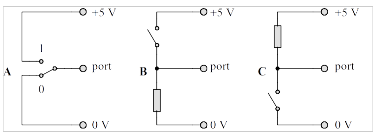
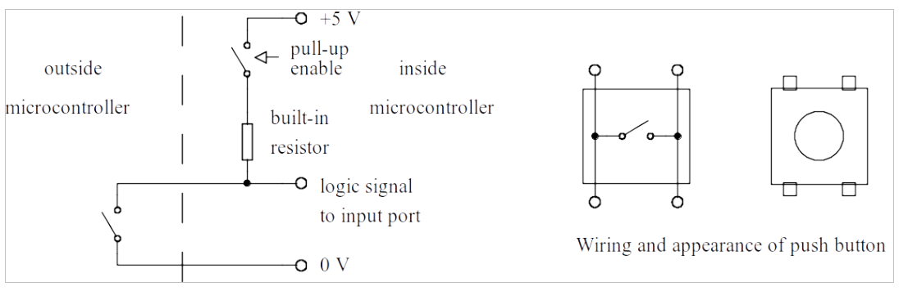
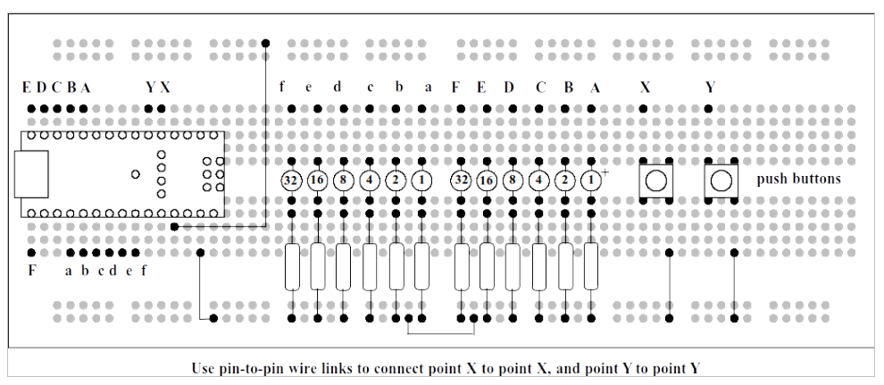
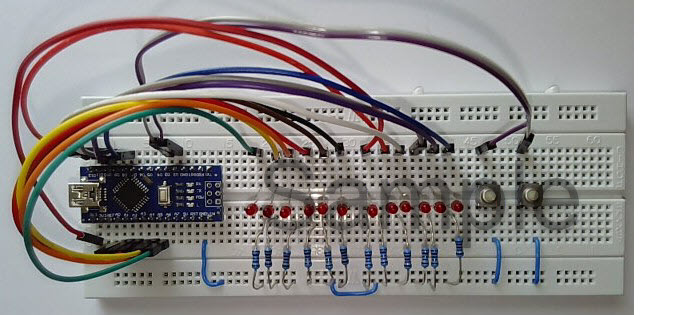

Experiment 2: Digital Input#
All the programme examples in Experiment 1: Binary Counter dealt with Digital Output, and we learned how to set the bits in the Data Direction Register (DDR) to make designated ports work as outputs. In Experiment 2 we shall look at digital inputs.
DDRC7 |
DDRC6 |
DDRC5 |
DDRC4 |
DDRC3 |
DDRC2 |
DDRC1 |
DDRC0 |
|---|---|---|---|---|---|---|---|
0 |
0 |
1 |
1 |
1 |
1 |
1 |
1 |
Referring to Table 17, the bits set to logic “1” in DDRC correspond to physical ports set as outputs.
Question: What about the bits set to logic “0”?
Answer: The physical ports are inputs, and can be connected to devices outside the microcontroller, for example switches and sensors.
Question: *How is the logic state of a port accessed by the microcontroller?
Answer: By reading from the corresponding port number. The ports on our Nano board are a maximum of 8 bits wide, so a read from the port returns a value between 0 and 255 (\(2^8 - 1\)).
Question: Supposing there are several digital inputs on a particular port. How can we distinguish between one input and another?
Answer: There are several ways of doing this, but they are all based on the idea of masking.
In the following example, imagine that there is a physical switch connected to Port C, bit 7. A read from Port C returns the state of all the bits from 0 to 7. In order to isolate just bit 7, we use a mask and a decision.
Value read from Port |
0 or 1 |
1 |
0 |
0 |
1 |
0 |
1 |
1 |
Mask |
1 |
0 |
0 |
0 |
0 |
0 |
0 |
0 |
Value AND Mask |
0 or 1 |
0 |
0 |
0 |
0 |
0 |
0 |
0 |
The last row of Table 18 shows the result of an AND operation on the value read and the mask. So, a decision zero/non-zero will be exclusive to the bit that was masked.
The Arduino version of “C” includes some commands which allow individual bits to be interrogated. The mask operation is still there but it is “behind the scenes”.
Connecting a switch to a port#
How do we connect a switch to a port pin? There are various possibilities as shown in Fig. 147.
{kind=link}

Fig. 147 Three ways to connect a switch to a port.#
Option “A” looks good, but there are several problems. It requires a “change over” switch, with connections to both contacts. In addition, when the switch is in motion from “0” to “1” there is a brief period when the port voltage is undefined, which can result in unpredictable operation. For example, it could be seen as multiple operations of the switch.
Option “B” is much better. It only requires a “single pole” switch, which is the usual configuration for a keyboard. In addition, the voltage on the port is always defined; logic “0” when the switch is open, logic “1” when it is closed.
Option “C” has the same advantages as option “B”, though of course the switch action is reversed – logic “1” when the switch is open, logic “0” when the switch is closed. Historically, switch inputs on digital circuits tend to be of this type, which is known as “active low” switching. In fact, this option is supported by the internal hardware of the microcontroller, which has built-in resistors so all that is required is an external switch connected between the port and logic “0”.
This is the case for the hardware that we are using and is illustrated in Fig. 148.
{kind=link}

Fig. 148 Active low switching for a microcontroller.#
Each port has an associated pull-up register, which allows individual
bits of the port to be “tied” to logic “1” through a high-value
resistor. Different families of microcontrollers have different
mechanisms for achieving this. In the demonstration programme that
follows, the input pull-up resistors are enabled by a Arduino specific
instruction, pinmode(). Another microcontroller used in our
undergraduate labs, the “AW60”, has special registers called “pull-up
enable” registers to perform the same task.
2.3. Using a switch in a programme#
The demonstration programme in Listing 4: Binary counter with stop/start control is, in fact, the very first
programme we tried in Experiment 1. There is one refinement; a switch is
tested and if the logic input is “0”, the counter does not advance.
Notice the pinmode() instruction in setup, which turns on the internal
pull-up resistor. This is a one-off instruction at the start of
programme execution.
Create an Arduino sketch, and copy/paste the code from Listing 4: Binary counter with stop/start control into it.
The testing of the switch input could be done using an Arduino-specific
instruction, digitalRead(), but for the sake of completeness here is
how it can be done using a port read and a logical “and” operation. The
designated port is port D, bit 2. Note the use of the exclamation mark
(“!”); “!=” means “does not equal”.
if ((PIND & 0b00000100) != 0) {
counter2++;
}
This will work with a wide range of different microcontrollers and “C” compilers. Note the use of the ampersand (”&”) which is the logical “and” operation. The equivalent using an Arduino specific command is as follows:
if ( digitalRead(2) != 0 ) {
counter2++;
}
The argument of the digitalRead() operation, 2, is part of the
“shorthand” used by Arduino programmers to designate a particular port
pin. It has the advantage of being consistent over a wide range of
boards in the Arduino family.
Add the two push button switches to the plug-in breadboard, using pin-to-pin leads ans shown in Fig. 149. Take great care when mounting the switches on the breadboard, to orient them correctly, and to avoid bending the little tabs!
When the programme runs, the LEDs on Port C will count up as before. When the left-hand button is pressed, the counter stops and resumes when the button is released. We are “in control” of the counter!
{kind=link}

Fig. 149 Wiring diagram for Experiment#
2.4. Let’s go faster#
The next programme, in Listing 5: Binary counter with stop/start and turbo button, uses both buttons. The left-hand button, as before, stops the counter. The right-hand button is a “turbo” button, and makes the counter speed up by a factor of 10!
A new programme structure, if...else has been introduced in Listing 5 (lines 28—33) is used to decide on a delay of 1000 ms
or a delay of 100 ms, depending on the condition of the button.
The general if…else structure is as follows:
if (condition 1) {
operation 1
} else {
operation 2
}
An additional programme structure, else if, can replace else if there
are multiple decisions.
2.5. An exercise for the reader…#
The last part of Experiment 2 is an exercise for the reader. Do not despair, all the programme elements needed have been covered in this Experiment and Experiment 1.
Modify the programme in Listing 5 so that the two buttons have this effect:
If no buttons are pressed, a counter on Port C and a counter on Port B increment at the same rate, with a delay of 1000 ms so that the LEDs seem to be counting identically.
If the left button is pressed, the LEDs on Port C stop counting but the LEDs on Port B continue as before.
If the right button is pressed, the LEDs on Port B stop counting but the LEDs on Port C continue as before.
If both buttons are pressed, both sets of LEDs stop counting but resume when the buttons are released.
A hint: there are four distinct parts inside loop(); first of all,
update both sets of LEDs. Then test one button and make a decision to
increment counter 1 or not. Then test the other button and do the same
for counter 2. Finally, adjust the delay.
2.6. Assessment of Experiment 2#
This follows the pattern set in Experiment 1.
A photograph of the modified breadboard, with some form of identification.
A listing of your final programme (as specified in Section 5 above) with suitable comments.
Appendix A: Code Listings#
Listing 4: Binary counter with stop/start control#
View and download code as a GitHub gist: digi_input1.ino)..
Appendix B: Photograph of Experiment 2#
The following photograph (Fig. 150 ) has been provided by Dr Davies who created this experiment.
{kind=link}

Fig. 150 Photograph of the completed prototype board for Experiment 2.#